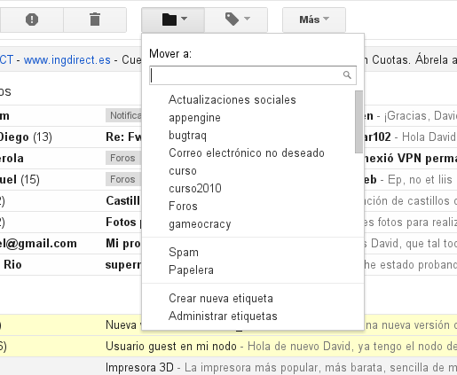

1. Introducción

En la práctica de hoy continuaremos cogiendo práctica con el correo de electrónico. Despues de lo que vimos el día anterior hoy veremos cómo borrar y archivar correos, buscar correos y enviar correos con imágenes.
2. Acceder al correo electrónico

Para acceder al correo electrónico por primera vez sigue estos pasos:
- Abre un explorador.
- Accede a la dirección: http://gmail.uji.es
- Utiliza tu nombre de usuario y contraseña para entrar.
- Lee el correo que has recibido estos últimos días.
3. Crear una carpeta
Vamos a ver cómo podemos organizar nuestros correos importantes. Primero que nada, deberemos crear una nueva carpeta.
- Selecciona un correo electrónico y pulsa en el icono de las carpetas.
- Elige la opción de Crear nueva carpeta, y asigna un nombre a la nueva carpeta.
- Accede a la nueva carpeta desde el navegador de carpetas del menú izquierdo.
4. Múltiples destinatarios
Voy a enviaros un e-mail a todos con una fotografía y un ejercicio explicado en el texto del correo. ¿Sabrías resolverlo?
- Viendo que el e-mail va dirigido a toda la clase, ¿sabrías cuál es la diferencia entre pulsar en Responder al mensaje y pulsar en Responder a todos?
- ¿Y para qué sirve Reenviar?
- Lee el enunciado del correo y manda el ejercicio a toda la clase.
5. Ejercicio
En Magdalena nos vamos toda la familia a pasar unos días en Granada. ¿Sabrías buscar 1 o 2 fotos de los sitios más bonitos que visitar por allí y enviármelas por correo?